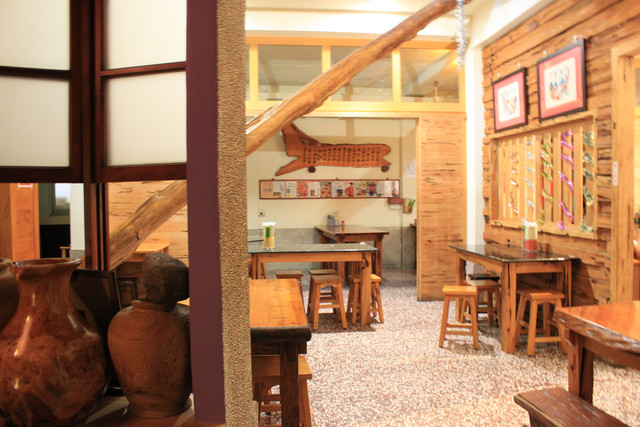
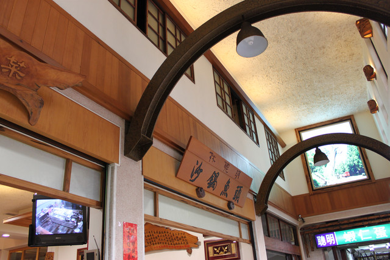

about us
林聰明沙鍋魚頭的由來
賣魚頭的由來，起源於林聰明之父 – 林進卿的興趣，釣魚而展現出的一道好料理！
民國45年，林聰明的父親在文化路夜市上擺小吃攤養家，平時的興趣是釣魚與跳舞，後人談論到林聰明的父親時，常常誇讚他的釣魚功夫。但是釣到太多的魚，就算分送給親朋好友也都吃不完，索性結合平時自己料理的私房菜，拿到自己經營的小吃攤販售。
沒想到許多客人一吃，都覺得這道手路菜好吃極了，紛紛誇讚想要吃這道菜，奈不住顧客的要求，就乾脆加入這道新菜，開始了砂鍋魚頭的緣份。
（照片攝於民國59年，林聰明本人在攤位上顧店）
林聰明愛木頭 - 日式建築
中正總店鋪為歷史悠久的傳統日式建築（約90年歷史），經林老闆自己巧思改造，注入了更強的生命力，展現出木頭之美，讓顧客彷彿置身於森林裡享受著淡淡的檜木香，品嚐著60年道地的傳統小吃。
「為何會保有老建築？」
嘉義－為檜木的故鄉。林聰明老闆對於家鄉的濃厚情誼，同時也萌生熱愛檜木的心，因此，常與家人出國時，除了欣賞不同的建築物外，對於木建築，更有獨特的情感，因此決定打造ㄧ個自己喜愛的家。
「加入自己的創意，親身設計參與裝潢重修」
成就現今店的契機，於民國94年中正路商店造街活動，翻修路面，數個月的工程，林聰明趁此時，決心改造自己的店鋪，因沒有經驗所以改造時間也比一般工程耗時更久，整修老建築及改造內部是為了打造心中的綠建築。

「作自己的設計師」
首席設計師是林聰明老闆，創意美學顧問是林太太與女兒們，彼此共同的意念是要保留老建築的美，堅持使用檜木，一木一木的木頭卡榫慢慢修補，慢工出細活的精神，才得以保存這百年的建築。

「自己的喜歡也帶給客人」
林聰明常說裝修過程比生孩子還辛苦，也因修改而意見紛歧，與其說房子是用蓋的,更貼切的形容是「吵」出來的。這些過程真的很不容易。裝修完的店面，成為全家人心中的驕傲，辛苦是值得的。歡迎蒞臨本店,貼近林家的建築用心，享受時空下的建築美。
老街二通情，劃時代的中正路
【起灶處】
日據時代，中山路習稱大通，即日語大街意思，中正路則稱「二通」。當時二通的振山眼科診所由頗負盛名的劉傳來醫師經營，劉院長是林聰明創業時期的恩人，且知道林聰明的創業困難，加上大女兒剛出生，讓一家人在診所的騎樓下擺設路邊攤，且不收店租達數十年，使林聰明一家人，永遠感恩大德。